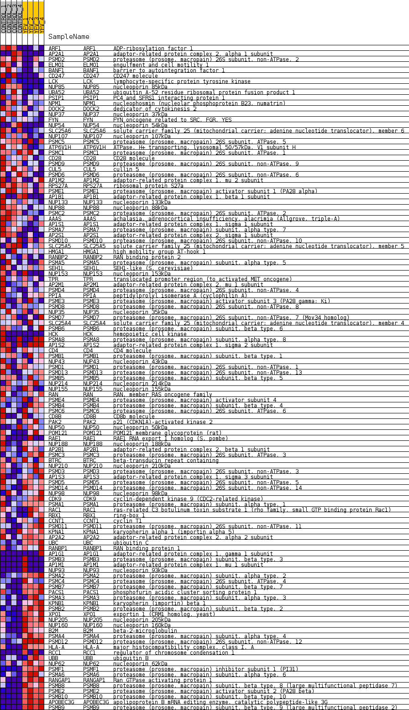
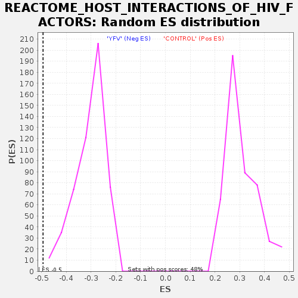

Profile of the Running ES Score & Positions of GeneSet Members on the Rank Ordered List
| Dataset | MATRIZ_GSE99081_collapsed_to_symbols.gsea_CLASE_99081.cls#CONTROL_versus_YFV |
| Phenotype | gsea_CLASE_99081.cls#CONTROL_versus_YFV |
| Upregulated in class | YFV |
| GeneSet | REACTOME_HOST_INTERACTIONS_OF_HIV_FACTORS |
| Enrichment Score (ES) | -0.49369487 |
| Normalized Enrichment Score (NES) | -1.604404 |
| Nominal p-value | 0.0 |
| FDR q-value | 0.066898644 |
| FWER p-Value | 0.865 |
| SYMBOL | TITLE | RANK IN GENE LIST | RANK METRIC SCORE | RUNNING ES | CORE ENRICHMENT | |
|---|---|---|---|---|---|---|
| 1 | ARF1 | ADP-ribosylation factor 1 | 251 | 0.996 | 0.0037 | No |
| 2 | AP2A1 | adaptor-related protein complex 2, alpha 1 subunit | 469 | 0.848 | 0.0067 | No |
| 3 | PSMD2 | proteasome (prosome, macropain) 26S subunit, non-ATPase, 2 | 711 | 0.738 | 0.0060 | No |
| 4 | ELMO1 | engulfment and cell motility 1 | 866 | 0.683 | 0.0097 | No |
| 5 | BANF1 | barrier to autointegration factor 1 | 1433 | 0.543 | -0.0149 | No |
| 6 | CD247 | CD247 molecule | 1492 | 0.531 | -0.0082 | No |
| 7 | LCK | lymphocyte-specific protein tyrosine kinase | 1591 | 0.510 | -0.0044 | No |
| 8 | NUP85 | nucleoporin 85kDa | 1902 | 0.496 | -0.0140 | No |
| 9 | UBA52 | ubiquitin A-52 residue ribosomal protein fusion product 1 | 1969 | 0.488 | -0.0087 | No |
| 10 | PSIP1 | PC4 and SFRS1 interacting protein 1 | 2037 | 0.479 | -0.0035 | No |
| 11 | NPM1 | nucleophosmin (nucleolar phosphoprotein B23, numatrin) | 2384 | 0.428 | -0.0167 | No |
| 12 | DOCK2 | dedicator of cytokinesis 2 | 2415 | 0.424 | -0.0104 | No |
| 13 | NUP37 | nucleoporin 37kDa | 2593 | 0.398 | -0.0137 | No |
| 14 | FYN | FYN oncogene related to SRC, FGR, YES | 2773 | 0.371 | -0.0176 | No |
| 15 | NUP54 | nucleoporin 54kDa | 2828 | 0.363 | -0.0139 | No |
| 16 | SLC25A6 | solute carrier family 25 (mitochondrial carrier; adenine nucleotide translocator), member 6 | 2858 | 0.358 | -0.0087 | No |
| 17 | NUP107 | nucleoporin 107kDa | 2975 | 0.346 | -0.0092 | No |
| 18 | PSMC5 | proteasome (prosome, macropain) 26S subunit, ATPase, 5 | 3127 | 0.329 | -0.0122 | No |
| 19 | ATP6V1H | ATPase, H+ transporting, lysosomal 50/57kDa, V1 subunit H | 3683 | 0.268 | -0.0415 | No |
| 20 | PSMC1 | proteasome (prosome, macropain) 26S subunit, ATPase, 1 | 3697 | 0.267 | -0.0371 | No |
| 21 | CD28 | CD28 molecule | 3718 | 0.265 | -0.0332 | No |
| 22 | PSMD9 | proteasome (prosome, macropain) 26S subunit, non-ATPase, 9 | 3732 | 0.263 | -0.0289 | No |
| 23 | CUL5 | cullin 5 | 3755 | 0.262 | -0.0252 | No |
| 24 | PSMD6 | proteasome (prosome, macropain) 26S subunit, non-ATPase, 6 | 3986 | 0.243 | -0.0348 | No |
| 25 | AP1M2 | adaptor-related protein complex 1, mu 2 subunit | 4045 | 0.240 | -0.0338 | No |
| 26 | RPS27A | ribosomal protein S27a | 4134 | 0.232 | -0.0347 | No |
| 27 | PSME1 | proteasome (prosome, macropain) activator subunit 1 (PA28 alpha) | 4391 | 0.212 | -0.0465 | No |
| 28 | AP1B1 | adaptor-related protein complex 1, beta 1 subunit | 4440 | 0.208 | -0.0454 | No |
| 29 | NUP133 | nucleoporin 133kDa | 4450 | 0.207 | -0.0420 | No |
| 30 | NUP88 | nucleoporin 88kDa | 4544 | 0.198 | -0.0439 | No |
| 31 | PSMC2 | proteasome (prosome, macropain) 26S subunit, ATPase, 2 | 4826 | 0.173 | -0.0580 | No |
| 32 | AAAS | achalasia, adrenocortical insufficiency, alacrimia (Allgrove, triple-A) | 4883 | 0.167 | -0.0582 | No |
| 33 | AP1S1 | adaptor-related protein complex 1, sigma 1 subunit | 5035 | 0.156 | -0.0646 | No |
| 34 | PSMA7 | proteasome (prosome, macropain) subunit, alpha type, 7 | 5238 | 0.134 | -0.0745 | No |
| 35 | AP2S1 | adaptor-related protein complex 2, sigma 1 subunit | 5316 | 0.129 | -0.0768 | No |
| 36 | PSMD10 | proteasome (prosome, macropain) 26S subunit, non-ATPase, 10 | 5332 | 0.127 | -0.0753 | No |
| 37 | SLC25A5 | solute carrier family 25 (mitochondrial carrier; adenine nucleotide translocator), member 5 | 5519 | 0.111 | -0.0846 | No |
| 38 | HMGA1 | high mobility group AT-hook 1 | 5567 | 0.108 | -0.0855 | No |
| 39 | RANBP2 | RAN binding protein 2 | 5581 | 0.107 | -0.0842 | No |
| 40 | PSMA5 | proteasome (prosome, macropain) subunit, alpha type, 5 | 5659 | 0.102 | -0.0870 | No |
| 41 | SEH1L | SEH1-like (S. cerevisiae) | 5687 | 0.100 | -0.0867 | No |
| 42 | NUP153 | nucleoporin 153kDa | 5902 | 0.084 | -0.0984 | No |
| 43 | TPR | translocated promoter region (to activated MET oncogene) | 6048 | 0.072 | -0.1060 | No |
| 44 | AP2M1 | adaptor-related protein complex 2, mu 1 subunit | 6117 | 0.067 | -0.1089 | No |
| 45 | PSMD4 | proteasome (prosome, macropain) 26S subunit, non-ATPase, 4 | 6348 | 0.049 | -0.1222 | No |
| 46 | PPIA | peptidylprolyl isomerase A (cyclophilin A) | 6576 | 0.033 | -0.1357 | No |
| 47 | PSME3 | proteasome (prosome, macropain) activator subunit 3 (PA28 gamma; Ki) | 6661 | 0.029 | -0.1403 | No |
| 48 | PSMD8 | proteasome (prosome, macropain) 26S subunit, non-ATPase, 8 | 6710 | 0.026 | -0.1428 | No |
| 49 | NUP35 | nucleoporin 35kDa | 6808 | 0.021 | -0.1484 | No |
| 50 | PSMD7 | proteasome (prosome, macropain) 26S subunit, non-ATPase, 7 (Mov34 homolog) | 6854 | 0.018 | -0.1509 | No |
| 51 | SLC25A4 | solute carrier family 25 (mitochondrial carrier; adenine nucleotide translocator), member 4 | 6860 | 0.017 | -0.1508 | No |
| 52 | PSMB6 | proteasome (prosome, macropain) subunit, beta type, 6 | 7048 | 0.008 | -0.1623 | No |
| 53 | HCK | hemopoietic cell kinase | 7242 | 0.000 | -0.1742 | No |
| 54 | PSMA8 | proteasome (prosome, macropain) subunit, alpha type, 8 | 9584 | -0.007 | -0.3193 | No |
| 55 | AP1S2 | adaptor-related protein complex 1, sigma 2 subunit | 9633 | -0.009 | -0.3222 | No |
| 56 | CD4 | CD4 molecule | 9668 | -0.011 | -0.3241 | No |
| 57 | PSMB1 | proteasome (prosome, macropain) subunit, beta type, 1 | 9745 | -0.014 | -0.3285 | No |
| 58 | NUP43 | nucleoporin 43kDa | 9760 | -0.014 | -0.3291 | No |
| 59 | PSMD1 | proteasome (prosome, macropain) 26S subunit, non-ATPase, 1 | 10102 | -0.030 | -0.3497 | No |
| 60 | PSMD13 | proteasome (prosome, macropain) 26S subunit, non-ATPase, 13 | 10422 | -0.053 | -0.3684 | No |
| 61 | PSMB5 | proteasome (prosome, macropain) subunit, beta type, 5 | 10473 | -0.058 | -0.3704 | No |
| 62 | NUP214 | nucleoporin 214kDa | 10733 | -0.078 | -0.3850 | No |
| 63 | NUP155 | nucleoporin 155kDa | 10739 | -0.079 | -0.3837 | No |
| 64 | RAN | RAN, member RAS oncogene family | 10781 | -0.083 | -0.3847 | No |
| 65 | PSME4 | proteasome (prosome, macropain) activator subunit 4 | 10799 | -0.085 | -0.3841 | No |
| 66 | PSMB4 | proteasome (prosome, macropain) subunit, beta type, 4 | 10839 | -0.088 | -0.3848 | No |
| 67 | PSMC6 | proteasome (prosome, macropain) 26S subunit, ATPase, 6 | 11010 | -0.102 | -0.3934 | No |
| 68 | CD8B | CD8b molecule | 11014 | -0.102 | -0.3916 | No |
| 69 | PAK2 | p21 (CDKN1A)-activated kinase 2 | 11105 | -0.110 | -0.3950 | No |
| 70 | NUP50 | nucleoporin 50kDa | 11180 | -0.118 | -0.3973 | No |
| 71 | POM121 | POM121 membrane glycoprotein (rat) | 11246 | -0.124 | -0.3989 | No |
| 72 | RAE1 | RAE1 RNA export 1 homolog (S. pombe) | 11252 | -0.124 | -0.3968 | No |
| 73 | NUP188 | nucleoporin 188kDa | 11329 | -0.132 | -0.3990 | No |
| 74 | AP2B1 | adaptor-related protein complex 2, beta 1 subunit | 11407 | -0.140 | -0.4011 | No |
| 75 | PSMC3 | proteasome (prosome, macropain) 26S subunit, ATPase, 3 | 11528 | -0.149 | -0.4056 | No |
| 76 | BTRC | beta-transducin repeat containing | 11766 | -0.171 | -0.4170 | No |
| 77 | NUP210 | nucleoporin 210kDa | 11772 | -0.172 | -0.4140 | No |
| 78 | PSMD3 | proteasome (prosome, macropain) 26S subunit, non-ATPase, 3 | 11846 | -0.178 | -0.4151 | No |
| 79 | AP1S3 | adaptor-related protein complex 1, sigma 3 subunit | 11895 | -0.183 | -0.4145 | No |
| 80 | PSMD5 | proteasome (prosome, macropain) 26S subunit, non-ATPase, 5 | 11911 | -0.185 | -0.4119 | No |
| 81 | PSMD14 | proteasome (prosome, macropain) 26S subunit, non-ATPase, 14 | 11924 | -0.186 | -0.4090 | No |
| 82 | NUP98 | nucleoporin 98kDa | 12083 | -0.201 | -0.4149 | No |
| 83 | CDK9 | cyclin-dependent kinase 9 (CDC2-related kinase) | 12103 | -0.203 | -0.4122 | No |
| 84 | PSMA1 | proteasome (prosome, macropain) subunit, alpha type, 1 | 12891 | -0.287 | -0.4555 | No |
| 85 | RAC1 | ras-related C3 botulinum toxin substrate 1 (rho family, small GTP binding protein Rac1) | 12989 | -0.299 | -0.4557 | No |
| 86 | RBX1 | ring-box 1 | 13011 | -0.302 | -0.4511 | No |
| 87 | CCNT1 | cyclin T1 | 13205 | -0.329 | -0.4568 | No |
| 88 | PSMD11 | proteasome (prosome, macropain) 26S subunit, non-ATPase, 11 | 13564 | -0.374 | -0.4717 | No |
| 89 | KPNA1 | karyopherin alpha 1 (importin alpha 5) | 13898 | -0.425 | -0.4841 | No |
| 90 | AP2A2 | adaptor-related protein complex 2, alpha 2 subunit | 14053 | -0.451 | -0.4850 | Yes |
| 91 | UBC | ubiquitin C | 14182 | -0.479 | -0.4836 | Yes |
| 92 | RANBP1 | RAN binding protein 1 | 14212 | -0.484 | -0.4760 | Yes |
| 93 | AP1G1 | adaptor-related protein complex 1, gamma 1 subunit | 14295 | -0.498 | -0.4715 | Yes |
| 94 | PSMB3 | proteasome (prosome, macropain) subunit, beta type, 3 | 14438 | -0.500 | -0.4706 | Yes |
| 95 | AP1M1 | adaptor-related protein complex 1, mu 1 subunit | 14488 | -0.500 | -0.4640 | Yes |
| 96 | NUP93 | nucleoporin 93kDa | 14495 | -0.500 | -0.4546 | Yes |
| 97 | PSMA2 | proteasome (prosome, macropain) subunit, alpha type, 2 | 14672 | -0.535 | -0.4552 | Yes |
| 98 | PSMC4 | proteasome (prosome, macropain) 26S subunit, ATPase, 4 | 14766 | -0.557 | -0.4502 | Yes |
| 99 | PSMB7 | proteasome (prosome, macropain) subunit, beta type, 7 | 14794 | -0.565 | -0.4409 | Yes |
| 100 | PACS1 | phosphofurin acidic cluster sorting protein 1 | 14815 | -0.570 | -0.4311 | Yes |
| 101 | PSMA3 | proteasome (prosome, macropain) subunit, alpha type, 3 | 14958 | -0.609 | -0.4281 | Yes |
| 102 | KPNB1 | karyopherin (importin) beta 1 | 15038 | -0.635 | -0.4207 | Yes |
| 103 | PSMB2 | proteasome (prosome, macropain) subunit, beta type, 2 | 15120 | -0.662 | -0.4129 | Yes |
| 104 | XPO1 | exportin 1 (CRM1 homolog, yeast) | 15270 | -0.722 | -0.4082 | Yes |
| 105 | NUP205 | nucleoporin 205kDa | 15295 | -0.740 | -0.3953 | Yes |
| 106 | NUP160 | nucleoporin 160kDa | 15312 | -0.749 | -0.3818 | Yes |
| 107 | B2M | beta-2-microglobulin | 15466 | -0.811 | -0.3756 | Yes |
| 108 | PSMA4 | proteasome (prosome, macropain) subunit, alpha type, 4 | 15508 | -0.833 | -0.3620 | Yes |
| 109 | PSMD12 | proteasome (prosome, macropain) 26S subunit, non-ATPase, 12 | 15525 | -0.844 | -0.3467 | Yes |
| 110 | HLA-A | major histocompatibility complex, class I, A | 15527 | -0.844 | -0.3304 | Yes |
| 111 | RCC1 | regulator of chromosome condensation 1 | 15549 | -0.858 | -0.3150 | Yes |
| 112 | UBB | ubiquitin B | 15642 | -0.918 | -0.3030 | Yes |
| 113 | NUP62 | nucleoporin 62kDa | 15644 | -0.920 | -0.2852 | Yes |
| 114 | PSMF1 | proteasome (prosome, macropain) inhibitor subunit 1 (PI31) | 15701 | -0.986 | -0.2696 | Yes |
| 115 | PSMA6 | proteasome (prosome, macropain) subunit, alpha type, 6 | 15762 | -1.053 | -0.2529 | Yes |
| 116 | RANGAP1 | Ran GTPase activating protein 1 | 15881 | -1.251 | -0.2360 | Yes |
| 117 | PSMB8 | proteasome (prosome, macropain) subunit, beta type, 8 (large multifunctional peptidase 7) | 16014 | -1.655 | -0.2122 | Yes |
| 118 | PSME2 | proteasome (prosome, macropain) activator subunit 2 (PA28 beta) | 16061 | -1.905 | -0.1781 | Yes |
| 119 | PSMB10 | proteasome (prosome, macropain) subunit, beta type, 10 | 16150 | -2.694 | -0.1314 | Yes |
| 120 | APOBEC3G | apolipoprotein B mRNA editing enzyme, catalytic polypeptide-like 3G | 16189 | -3.449 | -0.0669 | Yes |
| 121 | PSMB9 | proteasome (prosome, macropain) subunit, beta type, 9 (large multifunctional peptidase 2) | 16195 | -3.614 | 0.0027 | Yes |

